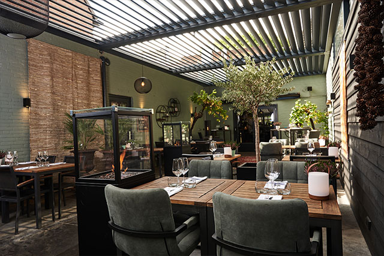

Vergaderen in Oisterwijk
Vergaderen hoeft vandaag de dag niet meer traditioneel in grijze boardrooms, met stoffige tapijten en slechte koffie. Laat u bij Seasons inspireren door de goede ambiance en het fijne decor, en laat de creativiteit de vrije loop tijdens een zakelijke bijeenkomst onder het genot van mooie gerechten.
Onze binnentuin is geschikt voor alle seizoenen en kan volledige privacy bieden voor u en uw gezelschap. Wij denken graag met u mee en zorgen met een persoonlijke aanpak voor een optimale ervaring.